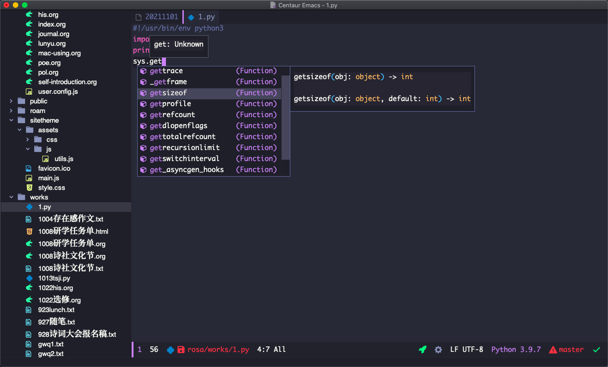
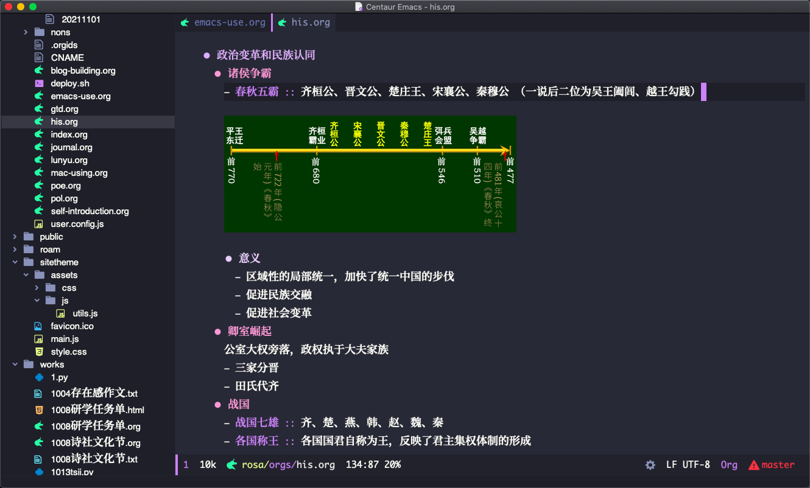

emacs-use
安利
我向所有关心我的人、我的朋友和所有访问我的网站的人推荐emacs——“神之编辑器”。
质疑
常有人这样因为种种原因而拒绝学习emacs：
- emacs学习曲线太高，学习它无法回本/短时间无法应用；
- 现在是21世纪，emacs这个上世纪七十年代的老古董已经（因为诸如图形界面不好、单线程、不够智能等等原因）不适合这个时代，早就该被扔进时代的故纸堆里了；
- emacs是程序员/黑客才用的，我用不上；
诸如此类的原因太多了，它们充斥于网络中，真要全列出来那可是要累死人的。
我也曾受到这些观点的影响而拒绝学习emacs——我有比任何人都充足的理由这么做：
- 我今年高二，学习相当紧张，没有多少富裕时间；
- 我是一个纯粹的文科生，高考六选三选的全是文科，压根没有往计算机方向发展的意愿，不擅长，也基本接触不到编程；
- 我平常只将电脑用于写作，我有大量优秀的选择：Typora/Ulysses/各种专业设计的纯文本写作软件和小说写作软件……并且我愿意为一个好的工具付费。
现在我很庆幸自己没有放弃emacs。那些理由全都是错的。以下两张截图可以干掉它们中的不少：
编程功能： 
写作功能： 
而一张截图能反映出的，只有emacs的冰山一角。
写作功能
编程没啥好说的，大家都比我懂。不过我可以肯定地说，目前世界上还 没有任何软件 在写作的 舒适度和高效性 上能比得过一个配置过的emacs。
美观
看到上面那张图了吗？图中的一切都是可以配置的。为了激发诸君的想象力，我列举一小部分：
- 字体字号字色，以及标头和文件头的图标（emacs有丰富的主题）
- 左侧栏（那是treemacs，可以隐去）
- 最底下写着什么
rosa/orgs/his.org的那行（那是modeline，也可以隐去） - 背景色和背景效果（透明啊毛玻璃啊什么的）
- 最顶上带有红黄绿三个点的标题栏，可以隐去
只有更好看，没有最好看。
效率
只列举大家会用到的一小部分：
- 写作时不用碰鼠标，甚至不用碰键盘角落的方向键，手不离开主键位就可以快速完成选择、复制、粘贴等操作；
- 按词移动光标（jieba.el）；
- 光标快速移动，一次移动4/16/64/128/1024……个字/词/行；
- 各种降维打击的高效操作，比如分屏，比如一键剪切从光标到行末的文本，比如补全，比如一键插入某段文字，比如org-mode……
- 把你的常用操作花几分钟写成函数，给它绑个快捷键，一键干任何事情；
实用功能
只列举大家最常被困扰的部分：
- markdown、latex完美支持
- 永不丢失，断电都可以revert回最后状态，还是不放心就自己上网摘抄一段两秒一保存的配置（你应该相信这个经过了四十多年考验的软件）；
- 没有专有文档格式，你写的东西可以用任何其他软件打开，不会被绑架（其实这句是废话，但我被坑过，所以写出来）
- 可以配合syncthing一类的软件，甚至是你的百度网盘做备份同步；
- 有“手机版”（orgzly，或者termux安装emacs，IOS可以使用ish安装emacs）
光我列出来的这些特性就足以干掉市面上九成以上的写作软件了，我这还没算上org-mode的逆天个人管理功能（这方面由于过于知名，请自行百度 org-mode ），还有emacs本身作为一个编程软件拥有的那些降维打击的功能：
比如说我就很喜欢用emacs把我所有想到的东西都记下来。无论我在做什么，当我有想记的东西时，按下 Command+j ，emacs会自动打开我这周用的日记本，插入一个新标题，并在标题前自动写上今天的日期和时间。当我写完了，按下 Command+s 保存，这个文件就会自动关闭。我可以按下 C-c C-q （也就是按住 Ctrl 再按下 c 和 q ）给每段日记打上标签，可以按下 Command+g 随时查找我所有日记中的内容，还可以在这里记下我要做的事，没做完的事会被emacs自动挪入下一天的日记文件。当然，这些功能和快捷键大部分需要你自己配置，但配置好它总共用不了十分钟。
综上，用emacs写东西纯属大炮打蚊子、杀鸡用牛刀……
我的按键绑定
macOS风格
- s-Z
- 撤销
- s-x
- 剪切
- s-o
- 打开文件
- s-w
- 关闭文件
- s-k
- org插入链接
- s-i
- 插入yasnippet
- s-b
- 切换buffer
- s-p
- 切换至treemacs
awesome-tab
- s-数字键
- 切换标签
- s-左右括号
- 切换标签组
日志
- s-j
- 新建一篇日志